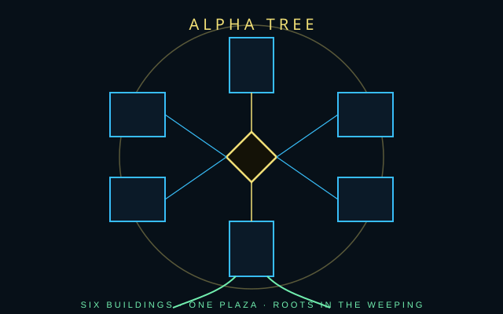

/// RAPID JUMP:
STATUS: ARCHIVE VERIFIED |
CLEARANCE: LEVEL-4 OVERSIGHT |
PROTOCOL: REVERIE DIRECTORATE
ARTICLE
DISCUSSION
SOURCE
HISTORY
YEAR 4,238 · DAWN OF HOPE
LORE · ZONE A · CUMULATION
The Alpha Tree
“The Alpha Tree is not a building someone designed. It is a cumulation.”

Overview
The Alpha Tree is not a building someone designed. It is a cumulation — the physical gathering of what Somnarak felt during the Consolihan, when flowing Han was frozen into meaning. The tallest pillar of a fortress built from frozen tears. The city grew around it the way crystal grows on crystal.
Metaphor: a great tree from the center. Roots plunge into the Abyss; branches reach toward the Dream. Literal: six massive buildings around a central point inside Zone A’s diamond, extending vertically — deep underground and high into the sky.
The diamond is a square turned on its side — a foundation rotated, destabilized, still holding. Four points: inward, outward, downward (Abyss), upward (Dream). It is perfect while everything around it is jagged asymmetry. The core was designed (or grown as if designed). Everything else grew organically.
Six buildings
| # | Name | Function | Position | Character |
|---|---|---|---|---|
| 1 | Sigh Palace | Council of Sighs | North | Heavy, oppressive, beautiful. Walls that weep. Grief. |
| 2 | Grand Archive | Memory-bank | Northeast | Labyrinthine, whispered. Shelves into Dream-space. Rare happiness as light. |
| 3 | The Crucible | Raw Han processing | Southeast | Loud, hot, dangerous. Weight that anchors. Sadness. |
| 4 | Spire of Dreams | Dream gateway | South | Ethereal glass. Illusions. Reaching toward what could be. |
| 5 | Abyssal Well | Abyss gateway / containment | Southwest | Dark, deep, cold. Chains. Nightmare. Weight of debts. |
| 6 | Architect’s Hall | Architects work and train | Northwest | Practical, marked, alive. Blueprints. Love as the bonds that hold the six together. |
Taboo 1 exists because the Cheongula’s thousand stabilize this Tree. Returned dead would unseat it. See Zone A and Consolihan.
Plaza
The space between the six buildings is the heart. Open to the sky — one of the few places in A where you can see it. Ground is polished Han, smooth, dark, faintly warm. Citizens are not permitted — only faction members and Council summons. The plaza hums. The city’s heartbeat.
Roots
The same Han-crystal continues down as Facility 01 — the Hand of Change. The R.D. is not a seventh building on the plaza; it is built into the Tree. Walls pulse. Floors are warm. The facility responds to emotional events (a Fracture makes the walls tremble), grows when Han accumulates, collapses rooms when sorrow disperses, and remembers. The Director’s Ω-grade M.A.W. fusion is connected; the Director feels every containment failure, every extraction, every Fracture, and the facility feels the Director back.
Marjuk’s Deep Vault is “A (Deep).” Retired Judexhan are taken under the Tree; source does not say what happens next. Dream Veil is thinner here. Keepers’ lowest vaults and the hungry Memory Archive both claim the underside. Do not treat those as one room.
Emotion-to-stone, from the Consolihan file: Grief became the weeping walls of the Sigh Palace. Love became the bonds that hold the six together. Dream became the Spire reaching toward what could be. Nightmare became the Abyssal Well plunging into what must not be. Happiness became the rare light through the Archive’s windows. Sadness became the weight that anchors the Crucible. The Tree is all of that at once. It is not a seventh Head. It is the reason the Heads have somewhere to sit.
Citizens who have never been summoned still feel it. Zone A’s streets slope toward the plaza even when the map says they do not. Han-Rails terminate at the diamond’s edge; you walk the last span. Architects treat the Tree as a living load-bearing member — you do not demolish a root to run a conduit. Collectors have tried to price the hum and been laughed out of the Palace. Weavers say the Spire is not a building that contains Dream; it is Dream that learned to stand up.